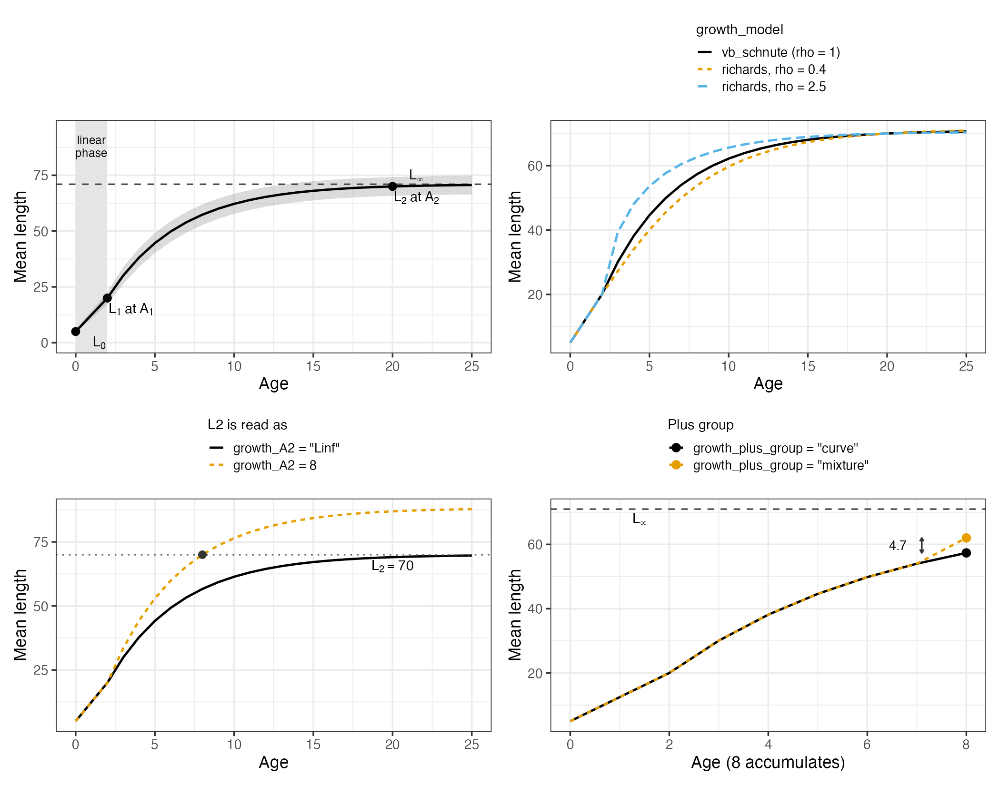
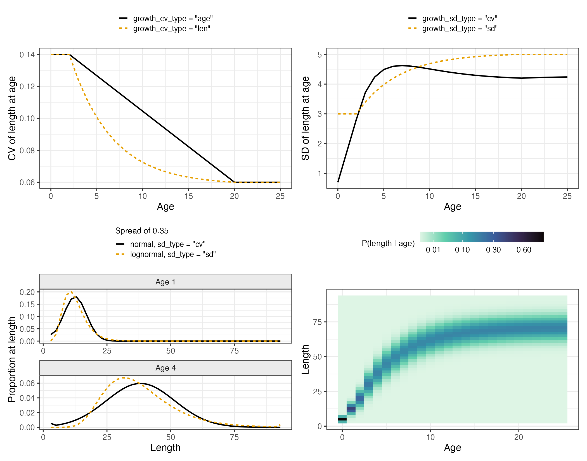
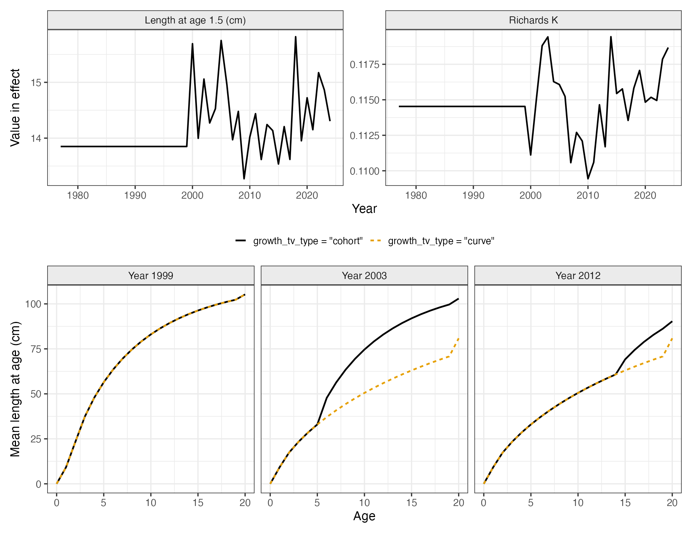
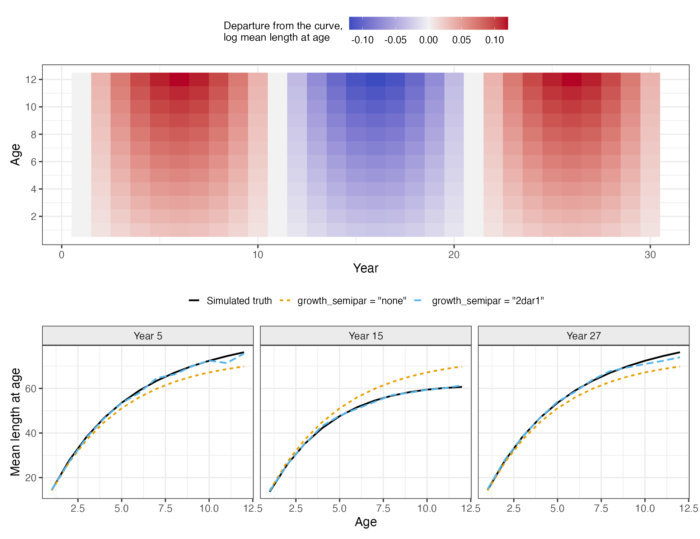

Choosing Growth Options
af_growth_options.RmdThe size-age transition matrix is used in four places: length compositions are compared against it, length-based selectivity is applied through it, conditional age-at-length rows are read from it, and when weight at age is derived rather than supplied it converts numbers to biomass, and so enters spawning biomass and the reference points.
All of the options that build it are arguments to
Setup_Mod_Biologicals(). This vignette covers what each one
does and when to use it. The algebra is in
vignette("c_model_equations") and the full argument list is
in vignette("t_model_options"). Two case studies run the
module end to end: vignette("ad_goa_rex_sole_case_study")
for constant parametric growth with conditional age-at-length, and
vignette("ae_ebs_pacific_cod_case_study") for time-varying
growth carried cohort by cohort.
The examples use the packaged EBS Pacific cod inputs, which have length bins, a weight-length relationship and length compositions, so every option below can be switched on against them.
library(SPoRC)
data("sgl_rg_ebs_pcod_data")
dat <- sgl_rg_ebs_pcod_data
yrs <- dat$years; n_yrs <- length(yrs)
ages <- dat$ages; n_ages <- length(ages)
n_reg <- 1; n_sex <- 1
# lens are the bin midpoints the population is carried on; the transition is
# built on the lower edges, which is what growth_len_lower supplies
input_list <- Setup_Mod_Dim(
years = yrs, ages = ages, lens = dat$lens,
n_regions = n_reg, n_sexes = n_sex, n_fish_fleets = 1, n_srv_fleets = 1,
n_seas = 1, n_pop = 1, natal_region = 1, verbose = FALSE
)
# Setup_Mod_Rec() has to run before the biologicals, because the maturity check
# reads rec_lag
input_list <- Setup_Mod_Rec(
input_list = input_list, rec_model = "mean_rec", rec_lag = 0, t_spawn = 0,
sigmaR_spec = "fix", ln_sigmaR = array(log(dat$rec$sigmaR), dim = c(2, 1, n_reg)),
sigmaR_switch = 1, do_rec_bias_ramp = 0,
init_age_strc = 2, equil_init_age_strc = 2, ln_global_R0 = dat$mle$ln_R0
)Notation
Every symbol used below. Growth parameters additionally carry
population, region and sex subscripts
,
which are dropped throughout because sharing across them is a separate
choice (growth_spec).
| Symbol | Meaning | Kind |
|---|---|---|
| integer age class, | index | |
| accumulator age, holding every fish that old and older | index | |
| first age past , where cohort propagation starts | index | |
| model year | index | |
| season, | index | |
| length bin, | index | |
duration of season
as a fraction of the year,
(seasdur) |
data | |
fraction of a season elapsed at a reading point
(t_fish, t_srv, t_spawn) |
data | |
| fraction of the year elapsed at that reading point | derived | |
| real age, | derived | |
lower edge of length bin
(growth_len_lower) |
data | |
midpoint of length bin
(lens) |
data | |
reference ages for
and
(growth_A1, growth_A2) |
data | |
| age at and above which applies | data | |
length at age zero, anchoring the linear phase
(growth_L0) |
data | |
| mean length at and at | estimated | |
| rate of approach to the asymptote | estimated | |
Richards coefficient;
under "vb_schnute"
|
estimated | |
| spread parameters at the two reference ages | estimated | |
| asymptotic length, solved from , , | derived | |
| mean length at real age | derived | |
| mean length of the plus group | derived | |
| interpolated spread parameter at | derived | |
| standard deviation of length at | derived | |
| growth increment over one year under year ’s parameters | derived | |
| size-age transition, | derived | |
| numbers at age at the start of year | derived | |
| weight at age | derived | |
| time-varying deviation on a growth parameter in year | estimated | |
| semi-parametric deviation on log mean length at age | estimated | |
a growth parameter and its bounds
(growth_par_bounds) |
see above | |
weight-length parameters in
(wt_len_pars) |
data | |
| standard normal distribution function | function |
Data or parameters
Under growth_model = "none", the default,
SizeAgeTrans is data: an array
[p x r x y x seas x l x a x s] of
built outside the model, column-stochastic, one slice per year and
season. Weight at age is data too. Nothing about size is estimated.
Under growth_model = "vb_schnute" or
"richards", the size-age transition is a function of five
or six estimable parameters. SizeAgeTrans is then ignored
and may be NA. One is built per fleet at that fleet’s
timing (t_fish, t_srv), plus one at spawning
time.
Use "none" if growth is determined externally and is not
under study, if you are bridging an assessment that fixes it, or if
there are no length data.
Use an estimated curve if you fit length compositions or conditional age-at-length, if size at age may have changed over the series, if growth uncertainty should propagate into the biomass, or if selectivity is length-based and would otherwise absorb a misspecified transition. The costs are parameters and tape-build time.
Prerequisites
The setup function will stop on each of these:
| Requirement | Where |
|---|---|
| Length bin midpoints |
lens in Setup_Mod_Dim()
|
fit_lengths = 1 |
Setup_Mod_Biologicals() |
growth_len_lower |
lower edges of those same bins, one per bin |
growth_A1, growth_A2
|
the two reference ages the curve is anchored at |
Which data you fit matters more than any switch below. Marginal
length compositions identify the curve weakly, because a length
distribution is a mixture over ages and abundance at age has to be
separated from size at age. Conditional age-at-length constrains growth
much more directly: a CAAL row is the age composition of the otoliths
taken from one length bin, so it is informative about size at age and
carries little information about abundance. If you have aged otoliths
with their lengths, fit them as CAAL (ObsSrv_caal,
do_caal = 1) rather than as marginal age compositions.
The curve and its anchors
MatAA <- array(0, dim = c(1, n_reg, n_yrs, 1, n_ages, n_sex))
MatAA[1, 1, , 1, , 1] <- dat$MatAA
input_list <- Setup_Mod_Biologicals(
input_list = input_list,
WAA = NULL, MatAA = MatAA, AgeingError = dat$AgeingError,
M_spec = "fix", Fixed_natmort = array(0.3866, dim = c(1, n_reg, n_yrs, n_ages, n_sex)),
fit_lengths = 1, SizeAgeTrans = NA,
growth_model = "vb_schnute",
ln_growth_pars = array(log(c(L1 = 14, L2 = 100, K = 0.12, CV1 = 0.15, CV2 = 0.08)),
dim = c(1, n_reg, n_sex, 5)),
growth_A1 = 1.5, growth_A2 = 20,
growth_len_lower = dat$lens_lower, growth_L0 = dat$lens_lower[1],
waa_model = "wt_len", wt_len_pars = dat$wtlen
)WAA = NULL and SizeAgeTrans = NA because
both come out of the growth module. The later sections change one
argument of this call at a time; ... in them stands for the
rest of it unchanged.

The Schnute curve and three of the switches that shape it. Top
left: mean length at age, with the linear phase below
growth_A1 shaded and a band one standard deviation either
side of the mean. Top right: the Richards coefficient changes the shape
of the approach to the asymptote, and equals von Bertalanffy at one.
Bottom left: the same
of 70 read as the length at age 8, from which the asymptote is solved,
or read as the asymptote itself. Bottom right: the plus-group adjustment
adds 4.7 cm at an accumulator age of 8.
Growth is parameterized in Schnute form rather than as , , . The parameters are lengths at named ages, so starting values can be read off a length-at-age scatter and bounds are lengths. Writing for real age (integer age plus the fraction of the year elapsed), and dropping the population, region and sex subscripts on every parameter:
with the asymptote solved from the two anchors,
and reported as Linf. The
,
,
form is strongly correlated between
and
;
the Schnute form is less so, because each parameter is tied to an age
with data behind it.
growth_model = "richards" applies the same curve to
lengths raised to a power
:
with . At this is the von Bertalanffy curve exactly, so the Richards form nests it. The linear phase below is unchanged.
growth_A1 and growth_A2 are data, not
parameters. Set growth_A1 at or just above the youngest age
in the length data, since below it the curve is a straight line from
growth_L0 and is an assumption rather than a fit. Set
growth_A2 old enough that fish are near the asymptote but
young enough that the sample is not small.
growth_A2 = "Linf" reads
as the asymptote itself, with no second reference age to solve it from.
Use it when matching a source parameterized that way. The bottom-left
panel shows that the same
gives a different curve under each reading.
growth_L0 anchors the linear phase and defaults to the
first length bin’s lower edge. It is rarely estimable, and only matters
if recruits appear in the length compositions.
gives a more flexible approach to the asymptote at the cost of one
parameter that is often unidentified. Start at
;
if the estimate barely moves and its standard error is large, use
"vb_schnute".
The spread around the mean
The curve gives mean length at age. The size-age transition also needs a spread, set by three switches.

Top left: the CV runs from CV1 to CV2
between the reference ages, interpolated on mean length or on age. Top
right: the same two parameters read as CVs, which scale the mean, or as
standard deviations, which do not. Bottom left: the two dimensionally
coherent pairings at a spread of 0.35, normal with
growth_sd_type = "cv" and lognormal with "sd";
note the mass the normal puts in the smallest bin at age 1. Bottom
right: the resulting size-age transition, on a square root color
scale.
Two parameters carry the spread,
and
at the two reference ages, interpolated between them.
growth_cv_type sets what the interpolation runs on:
where
,
or the oldest age evaluated when growth_A2 = "Linf". The
branch is taken on age either way; only the middle branch’s value
depends on
.
The two agree at the reference ages and differ most where growth is
fast, because interpolating on length compresses the change into the
young ages. "len" is the Stock Synthesis convention;
"age" gives a CV that declines steadily with age.
growth_sd_type then turns
into the standard deviation the transition is built from:
Under "cv" the spread scales with size, so a 20 cm and a
60 cm fish have standard deviations in the ratio 1:3. Under
"sd" the absolute spread is the same at every age.
"cv" gives an implausibly tight distribution at the
youngest ages when the linear phase runs down to a very small
growth_L0; use "sd" in that case. A CV that
declines with size
()
is the usual estimate, since the lengths of young fish vary with birth
date and early growth while old fish have converged on the
asymptote.
growth_dist sets the distribution that is binned. The
two are close at the spreads most assessments estimate; the panel above
uses 0.35 to make the difference visible. Use "lognormal"
when the spread is large enough that a normal puts appreciable mass
below zero length.
Note the pairing. The transition is always built from the
that growth_sd_type produced, and the lognormal transform
reads it as a log-scale standard deviation. So "lognormal"
belongs with growth_sd_type = "sd"; combining it with
"cv" passes a length-scale spread into a log-scale
transform.
The plus group
The accumulator age holds every fish that old and older, so its mean size is not the curve’s value there.
growth_plus_group = "mixture", the default, treats it as
a mixture of the ages it contains. The share of fish
years past the accumulator age
is taken as proportional to
,
the survivorship under a total mortality of 0.2 per year, and mean
length is taken to rise linearly from
to
over a second lifetime of
years:
The 0.2 is a fixed assumption about how fast numbers decline with
age, not an estimated rate, and it sets how much weight the older and
larger fish carry.
lies between
and
.
growth_plus_group = "curve" uses
directly.
The two agree closely when the accumulator age is old enough that
little growth remains, and diverge as the plus group moves younger. With
an accumulator age well short of the asymptote, "curve"
undersizes the plus group and shifts its length composition left.
Binning
The mean and the spread are turned into the size-age transition by integrating the distribution over each length bin. With the lower edge of bin , each edge is standardized,
and each bin takes the probability between its edges, with the two tails accumulated into the end bins:
The column sums to one for any
and
,
including means outside the binned range entirely, which is what makes
each column a proper
.
Under growth_dist = "lognormal" the same differences are
taken on the log scale, about a median-corrected mean so that
:
sets how many bins an age’s mass spreads over: large values flatten the column, small ones concentrate it near .
Timing within the year
Growth parameters are annual. growth_pars_y has no
season dimension, and none of
changes within a year. What changes within the year is the age
the curve is evaluated at.
Where each reading point falls
Each fleet reads its own size-age transition and weight at age at the point its observations are taken: fishery fleet at , survey at , and the spawning weight at in the spawning season. Each is a fraction of its own season, in , not a fraction of the year.
Converting one to a fraction of the year gives the elapsed time . For a reading at fraction of season :
where
is the duration of season
as a fraction of the year, from seasdur, and the seasons
sum to a year,
.
The empty sum is zero, so
is the start of the year.
The curve is then evaluated at the real age
for every age class , giving and from the same two equations as before. Nothing is interpolated between integer ages.
A worked example, four equal quarters so for all , with a survey read at the midpoint of the third quarter, and :
so an age 4 fish is placed at on the curve. Note that puts the reading halfway through that quarter, not halfway through the year. With a single season, , the two coincide and does give .
Why seasons add no approximation
Write the one-year increment under year ’s parameters as
and the same map over an arbitrary elapsed time as , which replaces with . Applied to a length already on the curve it returns the curve’s own value later:
The identity is exact for the von Bertalanffy form and holds to machine precision for the Richards form (a maximum absolute difference of cm at and ). Because the module evaluates directly rather than stepping season by season, the season structure cannot introduce error: with growth constant over years, the same mean length at age comes out whatever and are.
Only distinct values of within a season are evaluated, so fleets sharing a timing cost nothing extra.
The two exceptions
Two quantities are advanced by rather than read off the curve, because neither sits on it:
The plus group starts from its mixture-adjusted size , which is a weighted average of ages rather than a point on the curve. Under cohort growth, every age at or past starts from , the size that cohort actually reached.
Sharing and fixing
# one curve per sex, shared across regions, with the second CV held fixed
input_list <- Setup_Mod_Biologicals(
input_list = input_list, ...,
growth_model = "vb_schnute",
growth_spec = "est_shared_r",
growth_fix = c(L1 = FALSE, L2 = FALSE, K = FALSE, CV1 = FALSE, CV2 = TRUE)
)growth_spec uses the same vocabulary as every other
_spec argument: "est_all" (one set per
population, region and sex), "est_shared_r",
"est_shared_s", "est_shared_r_s", or
"fix". growth_fix overrides it for individual
parameters, holding named ones at their starting values regardless of
the sharing.
Sex: if the sexes differ in size at age and the compositions are sex-split, estimate them separately. Sharing growth across sexes that differ leaves the difference to be absorbed by selectivity.
Region: share across regions unless there are regional length data to identify a difference.
CV2 is usually the first parameter to fix, since it is
informed only by the oldest ages, where samples are small and the plus
group confounds it. Fix rho at one unless it moves.
Starting values matter here more than in most parts of the model.
ln_growth_pars defaults to the ends of the length bins with
a rate of 0.15 and CVs of 0.1, which is a placeholder rather than a
prior. Supply your own on the log scale, dimensioned
[n_pop x n_regions x n_sexes x n_gpars] in the order
L1, L2, K, CV1, CV2 and then rho. An external
growth fit, even a rough one, is a reasonable starting point.
Growth that changes over time
There are two mechanisms, and they can be used together.
Varying the parameters
input_list <- Setup_Mod_Biologicals(
input_list = input_list, ...,
growth_model = "richards",
growth_tv_model = c(L1 = "iid", K = "iid"),
growth_tv_years = list(L1 = 2000:2024, K = 2000:2024),
growth_tv_link = "logit",
growth_par_bounds = dat$growth$bounds,
growth_tv_sigma_spec = "fix",
growth_tv_type = "cohort"
)growth_tv_model names a structure per parameter,
"none", "iid" or "rw", either as
a vector in parameter order or named with the rest left constant. Each
varying parameter gains a deviation series in
ln_growth_devs and a process error standard deviation.
Growth parameters trade off against each other, so letting all five vary
at once tends to give a well-fitting series that is hard to interpret.
Name only the parameters you have a reason to move.
growth_tv_years restricts each parameter’s deviations to
given calendar years, as a vector applied to all of them or a list named
per parameter. Deviations outside the range are held at zero. Use the
years in which the length data are informative.
growth_tv_link sets the scale the deviation enters on.
For a base parameter
with deviation
,
the value in year
is
The log link is unbounded and can drive a CV negative or a
to an implausible value. The logit link keeps the parameter strictly
inside
from growth_par_bounds however large the deviation. Growth
parameters are all bounded by construction, so "logit" with
sensible bounds is the better default. The realized
are reported as growth_pars_y.
growth_tv_sigma_spec holds the process error standard
deviations at their starting values ("fix") or estimates
them ("est"). The starting values are the first stream of
growth_pe_pars, one slot per growth parameter. Fixing them
makes the deviations a penalized-likelihood problem in which you set how
much variation is allowed. Estimating them requires the deviations to be
integrated out; see below.
growth_tv_spec shares the deviation series across
regions and sexes with the same vocabulary as growth_spec.
A deviation series per stratum adds parameters quickly, so this is often
worth sharing even when the base parameters are not.
growth_rw_init_sigma gives the first year of a random walk
its own standard deviation, defaulting to 5, which leaves the starting
point close to free.
Curve or cohort

Top: the two growth parameters that vary in the EBS Pacific cod model, as the assessment’s estimate realizes them year by year. Bottom: what the same deviations do to mean length at age under each reading. The assessment’s deviations are small enough that the two nearly coincide, so the bottom panel exaggerates them into one sustained drop in from 2000 to make the mechanism visible. It is an illustration, not the assessment’s estimate.
growth_tv_type = "curve", the default, reads every
year’s sizes off that year’s curve. Nothing is carried between years: if
drops, every age is immediately shorter, including fish that grew
through twenty prior years. Use it when the deviations represent
something acting on all ages at once, or when the curve describes the
population sampled in a year rather than a growth process.
"cohort" carries size at age forward instead. Writing
for the growth increment over one year under year
’s
parameters,
the start-of-year mean length advances as
with the first age past . Three things follow. Ages still in the linear phase take the length at their birth year’s parameters gave them, so a cohort born in a poor year carries that start forward. The plus group blends the cohort entering it with the fish already there by their numbers at age, which is the only place growth depends on abundance. And a poor growth year tracks the affected cohorts up through the ages for the rest of the series. Use it when the deviations represent conditions a fish lived through.
Two consequences of "cohort": because the plus group
reads abundance, growth is evaluated inside the population dynamics year
loop and the model costs more to tape; and
is evaluated once from the first year’s curve and then held while the
mean moves, so the deviations change mean size without also changing the
spread.
Semi-parametric growth
growth_semipar adds a year-by-age surface of deviations
multiplying the parametric mean length at age,
applied after the curve and after any cohort propagation. The curve remains the parametric part and holds departures from it. This represents changes in the shape of size at age that no parameter of the curve can express: a curve with five parameters cannot fit a year in which only the four-year-olds were small, and an unconstrained transition per year is not identified.
input_list <- Setup_Mod_Biologicals(
input_list = input_list, ...,
growth_model = "vb_schnute",
growth_semipar = "2dar1",
growth_semipar_spec = "est",
growth_semipar_ages = 2:12,
growth_semipar_years = 1990:2024
)
Top: a known year-by-age surface used to simulate length compositions and conditional age-at-length. Bottom: mean length at age recovered from those data by a model with a 2D AR(1) surface and by one with the parametric curve alone, against the truth. Over the whole surface the semi-parametric model is within 8.9% of the simulated mean length at age; the parametric curve alone is within 15.8%.
The available forms are the process errors semi-parametric
selectivity uses: "iid", "rw" (a random walk
over years within an age), "2dar1" (a separable first-order
autoregression over ages and years), and "3dmarg" /
"3dcond" (a three-dimensional Gaussian Markov random field
over age, year and cohort, on the marginal or conditional variance).
The correlated forms are what make the surface estimable. A
year-by-age deviation is not identified from length data one cell at a
time, so the process error has to borrow strength across neighboring
cells. "iid" provides none of that and is mainly useful as
a null. "2dar1" is a reasonable default. The 3D forms add a
hyperparameter and correlate along the cohort diagonal as well as over
ages and years, which is worth it when a cohort signal is expected.
growth_semipar_ages and
growth_semipar_years hold deviations outside them at zero.
Restrict the surface to the ages and years the length data cover;
elsewhere it adds unconstrained parameters.
The spread follows the deviated mean, so under
growth_cv_type = "len" a deviation that lengthens a fish
also moves it along the CV ramp. Under "age" the spread at
age is unaffected.
The surface and the parametric time variation compose. Use the parameters for changes that can be attributed to a named mechanism and the surface for the residual, and avoid asking both to explain the same variation.
Why the two deviation streams are separate
They are indexed over different dimensions and applied at different points:
ln_growth_devs # [n_pop, n_regions, n_yrs, n_gpars, n_sexes] 4th dim: parameter
ln_growth_semipar_devs # [n_pop, n_regions, n_yrs, n_ages, n_sexes] 4th dim: ageln_growth_devs is applied before the curve is evaluated,
perturbing L1, L2, K,
CV1, CV2 and rho.
ln_growth_semipar_devs multiplies mean length at age after
the curve and after any cohort propagation.
Three things follow from that. The correlated process errors
correlate over age, year and cohort, which is only meaningful when the
index is age, so "2dar1" and the 3D forms are available to
the surface and not to the parametric stream, where "iid"
and "rw" are the only sensible structures. Cohort
propagation works off the growth increment the year’s parameters imply,
so it acts on the parametric stream; the surface multiplies in
afterwards and is not carried forward. And parametric deviations keep
size at age inside the curve’s shape, whereas the surface lets it
leave.
The two streams do share one array, growth_pe_pars: slot
[,,,,1] holds the time-varying standard deviations and
[,,,,2] the surface’s hyperparameters, with slots a given
form does not read mapped off.
Deviations as random effects
Both streams can be integrated out with the Laplace approximation
instead of penalized, as selectivity deviations are in
vignette("n_single_region_ebs_pollock_randomeff_case_study").
Pass the parameter name to fit_model():
# time-varying growth parameters, with their process error estimated
fit <- fit_model(input_list$data, input_list$par, input_list$map,
random = "ln_growth_devs", newton_loops = 3, silent = TRUE)
# a semi-parametric surface, or both together
fit <- fit_model(input_list$data, input_list$par, input_list$map,
random = c("ln_growth_devs", "ln_growth_semipar_devs"),
newton_loops = 3, silent = TRUE)This is what growth_tv_sigma_spec = "est" and
growth_semipar_spec = "est" require. Maximizing over a
process error standard deviation and the deviations it penalizes at the
same time, with both as fixed effects, drives the standard deviation
toward zero. Integrating the deviations out makes it a variance
parameter the data can inform. With the process error fixed, the
fixed-effect treatment is fine and cheaper.
fit_model() uses the tape Hessian for its Newton
refinement only when there are no random effects, so a random-effects
fit takes the slower path.
Weight at age
input_list <- Setup_Mod_Biologicals(
input_list = input_list,
WAA = NULL, MatAA = MatAA, ...,
growth_model = "richards",
waa_model = "wt_len", wt_len_pars = dat$wtlen # a, b in W = a L^b
)waa_model = "data", the default, reads WAA,
WAA_fish and WAA_srv from the arguments of the
same name.
waa_model = "wt_len" builds them from the size-age
transition and the weight-length relationship
applied at the bin midpoints
:
Weight at age then reflects the spread of length at age rather than
being the weight of the mean length, which differ when
.
The spawning weight uses the transition at spawning time and each
fleet’s weight the transition at that fleet’s timing, so weight at age
becomes fleet-specific, and time-varying whenever growth is.
WAA may be NULL.
Use "wt_len" when growth is estimated and the biomass
should inherit its uncertainty and time variation. Use
"data" when empirical weight at age is available, which is
generally better than a weight-length relationship, or when matching an
assessment that supplies it.
Under "wt_len" the weight arrays are model output, but
reference point and projection code read data$WAA. Copy the
reported arrays into the data list before calling
Get_Reference_Points() or
Do_Population_Projection():
rep <- fit$rep
input_list$data$WAA <- rep$WAA
input_list$data$WAA_fish <- rep$WAA_fish
input_list$data$WAA_srv <- rep$WAA_srvA related switch sits with the fleets rather than here:
fish_waa_selected and srv_waa_selected put
catch and index biomass on the selection-weighted weight at age, which
applies only with length-based selectivity and a derived weight.
Compositions on coarser bins
LenBinMap maps the model’s length bins onto the bins the
compositions are recorded on, a matrix
[n_lens x n_obs_lens] whose rows sum to one. Growing fish
on fine bins and fitting them on coarse ones gives a smoother transition
and better-behaved tails while keeping the compositions on the bins they
were collected on. The expected compositions are mapped through it
inside the likelihood, as the ageing error matrix maps ages.
Checking the setup
Setup_Mod_Biologicals() prints what it built when
verbose = TRUE. The EBS Pacific cod setup, with a
semi-parametric surface added on top, reports:
Growth is estimated (Richards); SizeAgeTrans is built inside the model
Growth parameters varying over time: L1 (iid), K (iid); link logit; size at age
read from cohort propagation from 2000
Weight at age (spawning, fishery, survey) is derived from growth and the
weight-length relationship
Semi-parametric growth: 2dar1 deviations on mean length at age over 48 years
and 11 ages, process error fix
Length compositions are recorded on 24 bins, mapped from the model's 121 bins
inside the likelihoodThat covers which parameters vary and how, the link, the year cohort propagation starts from, how many ages the surface covers, and where weight at age comes from.
After fitting, the report contains:
| Field | What it holds |
|---|---|
growth_pars_y |
the parameters in effect, [p x r x y x 6 x s]
|
Linf |
the derived asymptote, [p x r x y x s]
|
L_beg |
mean length at age at the start of the year |
mean_LAA_fish, mean_LAA_srv,
mean_LAA_spawn
|
mean length at age at each fleet’s timing and at spawning |
sd_LAA_* |
the matching spreads |
SizeAgeTrans_fish, SizeAgeTrans_srv,
SizeAgeTrans_spawn
|
the size-age transitions |
growth_tv_nLL, growth_semipar_nLL
|
the deviation penalties |
Plot growth_pars_y against year before interpreting a
time-varying fit, and mean_LAA_* in a few years against any
external length-at-age data. A growth series that swings without an
identifiable mechanism is usually absorbing something else, most often
selectivity or a change in sampling.
Summary
| Question | Argument | Default and when to move off it |
|---|---|---|
| Estimate growth at all? | growth_model |
"none"; move when fitting length or CAAL data |
| Which curve? | growth_model |
"vb_schnute"; "richards" only if
moves |
| Where to anchor? |
growth_A1, growth_A2
|
no default; ages the data cover |
| Is the asymptote? | growth_A2 = "Linf" |
no; use when matching a source that says so |
| How does the CV interpolate? | growth_cv_type |
"len"; "age" for a steadier decline |
| CVs or SDs? | growth_sd_type |
"cv"; "sd" if young ages get implausibly
tight |
| Length distribution? | growth_dist |
"normal"; "lognormal" at large spread,
paired with growth_sd_type = "sd"
|
| Plus group size? | growth_plus_group |
"mixture"; "curve" only near the
asymptote |
| Share across strata? |
growth_spec, growth_fix
|
"est_all"; share regions, split sexes, fix
CV2
|
| Does growth move? | growth_tv_model |
NULL; name only defensible parameters |
| Bounded deviations? | growth_tv_link |
"log"; prefer "logit" with bounds |
| Memory of past years? | growth_tv_type |
"curve"; "cohort" for lived
conditions |
| Shape changes too? | growth_semipar |
"none"; "2dar1" when the curve cannot
express it |
| Penalized or integrated? |
random in fit_model()
|
penalized; integrate to estimate a process error |
| Where does weight come from? | waa_model |
"data"; "wt_len" to inherit growth’s
uncertainty |
See also
-
vignette("c_model_equations")for the algebra of every switch here. -
vignette("t_model_options")for the full argument reference. -
vignette("ad_goa_rex_sole_case_study")for constant parametric growth with conditional age-at-length in a two-region model. -
vignette("ae_ebs_pacific_cod_case_study")for Richards growth with time-varying parameters carried cohort by cohort. -
vignette("n_single_region_ebs_pollock_randomeff_case_study")for the random-effects machinery the growth deviations share with selectivity.